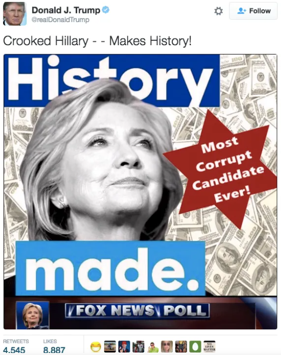
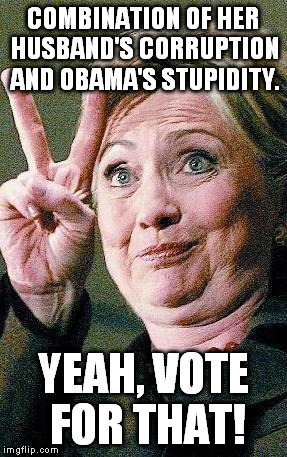
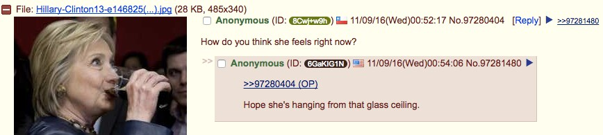

ARCHIVE ITEM · MEME_US2016_007
Crooked Hillary — Makes History! Most Corrupt Candidate Ever!
A meme using the phrase “Crooked Hillary” illustrates the repetition of a campaign attack label.
US · UNITED STATES
How political memes recast campaign language, personalise conflict, and turn opponents into shorthand characters.
← Back to United StatesDuring the 2016 US presidential campaign, memes attacking Hillary Clinton often used short nicknames, edited photographs, and claims about corruption. “Crooked Hillary” was one of Donald Trump’s repeated campaign slogans. Memes used the phrase as a quick label, encouraging viewers to see Clinton as dishonest before considering the details of any particular allegation.
“Crooked Hillary” became a recognisable slogan in Trump’s campaign messaging and online supporter culture. Memes paired it with images of Clinton, exaggerated expressions, or claims about her emails and political record. The format worked because a short, repeated label was easy to remember, remix, and share. The slogan expressed an attack on Clinton; by itself, it was not evidence that a specific allegation was true.
Another major meme theme grew out of Clinton’s “basket of deplorables” remark. In September 2016, she said that some of Trump’s supporters belonged in a “basket of deplorables,” referring to people she described as racist, sexist, homophobic, xenophobic, or Islamophobic. The phrase quickly spread online. Critics used it to discuss prejudice within parts of Trump’s support base, while some Trump supporters adopted “deplorables” as a badge of defiance.
The archived images show both styles: memes that mock Clinton and memes that turn “deplorables” into a group identity. The claims and insults in these images are part of their political message, not proof that the claims are true.
The images below show examples connected to this topic, with links to their recorded sources and additional item details.

ARCHIVE ITEM · MEME_US2016_007
A meme using the phrase “Crooked Hillary” illustrates the repetition of a campaign attack label.

ARCHIVE ITEM · MEME_US2016_008
The archive summary says this image attributes alleged corruption to Clinton and Obama; that is the meme’s framing, not an established finding.

ARCHIVE ITEM · MEME_US2016_009
A hostile post-election image uses violent language; it is displayed here as evidence of online political hostility, not endorsed language.

ARCHIVE ITEM · MEME_US2016_010
This record documents a “THE DEPLORABLES” image and codes it as reappropriation of Clinton’s phrase.